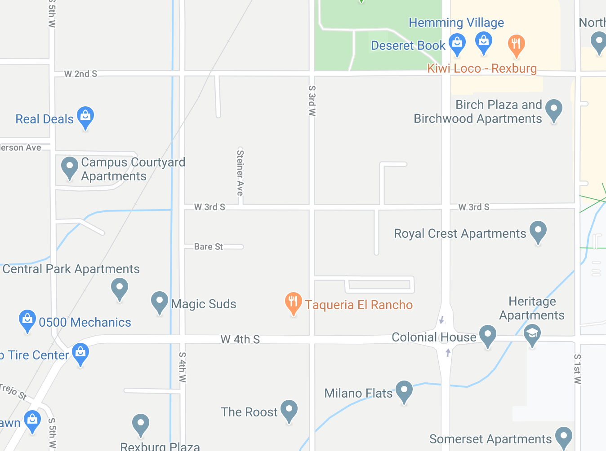

Soda Springs is located next to the Alexander Reservoir in the Bear River Valley. Past volcanic activity has shaped the landscape, and the residual geothermal activity has caused the numerous hot bubbling springs that gave it its name. Scenery reminiscent of Yellowstone is found at the famous man-made geyser in the center of town, as well as the inactive hot springs at Formation Cave. Large lava flows cover the plains north of town, which still protrude from the farmland in numerous places in the vicinity. The China Cap and China Hat are two volcano cones that stand several miles to the north. Surrounding Soda Springs there are beautiful, forested mountains, especially the Bear River Range to the south, and the Aspen Mountains to the east. Learn More
Preston Idaho

Weather Summary
Currently:
High: 30°F
Wind Chill: 90°F
Humidity: %
Wind Speed: mph
5 Day Forecast
| Required Javascript |
|---|
| Required Javascript |
Upcoming Events

Season Of Love
269 S 5th W
Rexburg, Idaho
208-555-6666